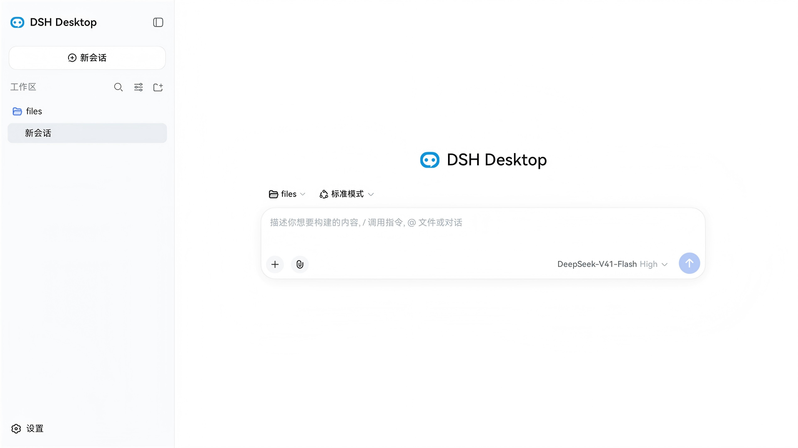
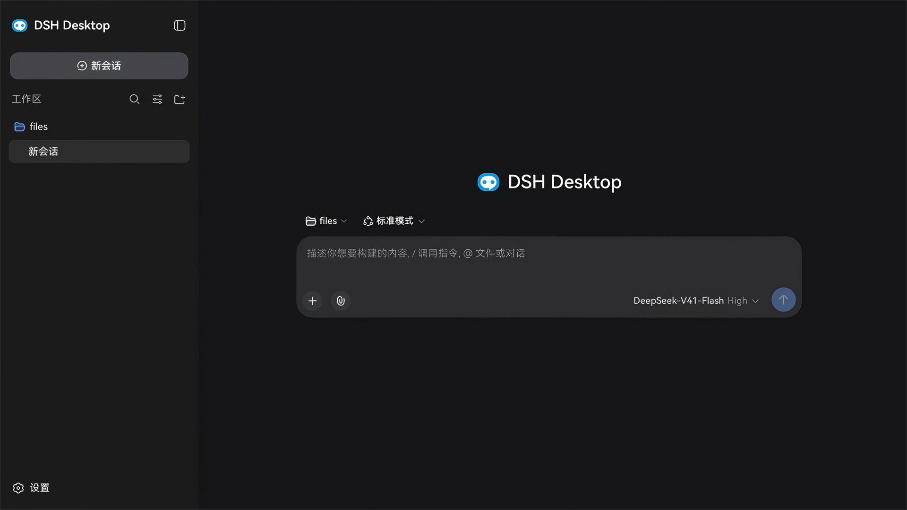

100% 官方 DeepSeek Harness —— 上游零改动
官方 Web UI、WebApiClient 与全部插件原样运行。agent 核心从不 fork，dsh 一旦发版即可用上新能力。
DSH Desktop 将官方 DeepSeek Harness Web UI 原封不动地跑进 Windows、Linux、macOS 与 HarmonyOS 的原生外壳。Agent 主机内置于应用自身，经 localhost 与界面通信：无云端中转、无 CORS、无账号。托盘、原生通知与内置插件市场，开箱即得。
桌面版与鸿蒙版 v0.1.5 · 基于 dsh-v0.1.5-rc.2 · 鸿蒙真机验证（6.1.0.135 / API 24）


DeepSeek Harness 运行于原生外壳中
为什么要原生外壳
完整的 dsh 体验，不必再拘泥于浏览器标签页。
官方 Web UI、WebApiClient 与全部插件原样运行。agent 核心从不 fork，dsh 一旦发版即可用上新能力。
dsh Host 跑在应用内部，界面经 localhost 与它通信。一切留在本机 —— 无云端中转、无 CORS、无账号。
系统托盘、原生通知、无边框窗口与剪贴板图片粘贴。Agent 平台像一等桌面应用一样运行 —— 因为它本来就是。
内置可视化插件市场（dsh-market），在「设置」内即可浏览并安装插件，即刻生效。
挑一张你的桌面
两个版本共同覆盖四大桌面平台 —— Windows、Linux、macOS（Electron）与 HarmonyOS。均为基于 DeepSeek AI 开源 DeepSeek Harness 的独立开源外壳，上游零改动。
实现原理
外壳在应用内部启动 dsh Host。
官方 Web UI 从应用自身的 localhost 服务器加载。
一切由 dsh 的 WebApiClient 驱动 —— HTTP 上行、WebSocket 下行。
无 CORS · 无鉴权环节 · 无自定义协议 · Agent 核心分毫未动